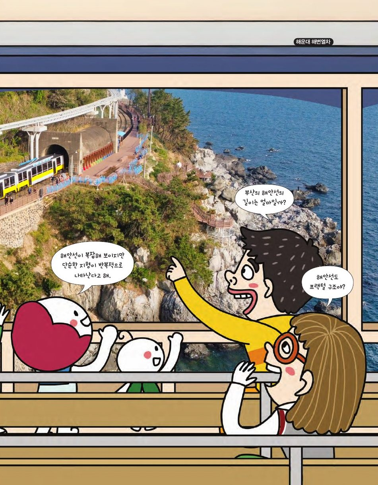

해변열차를 타고 보는 부산의 해안선, 그 길이는 얼마일까요? 망델브로는 복잡한 해안선이 단순한 형태의 반복이라는 데 주목했어요. 부분이 전체를 닮은 프랙털을 그려 봐요.
★ 이 단원에서는 — 프랙털의 원리를 이해하고 실생활 예시를 찾아 다양한 산출물을 만들 수 있다.

📍 해운대 해변열차나뭇가지, 눈송이, 브로콜리, 고사리… 작은 부분을 확대하면 전체와 비슷해요. 생명체는 영양과 산소를 받아들이기 위해 단위 부피당 겉넓이를 최대로 하는 구조를 택합니다. 정육면체를 쪼개면서 확인해 봐요.
| 모서리 길이 | 1 | 2 | 3 | 4 | n |
|---|---|---|---|---|---|
| 겉넓이 | 6 | 6n² | |||
| 부피 | 1 | n³ | |||
| 겉넓이 ÷ 부피 | 6 | 6/n |
| 단계 | 한 선분의 길이 | 선분의 개수 | 길이의 합 |
|---|
n단계: 한 선분 (1/3)ⁿ, 개수 4ⁿ, 길이의 합 (4/3)ⁿ → 단계가 올라갈수록 길이는 한없이 길어져요. 해안선 길이도 자로 잴수록 길어지는 것과 같아요!
| 단계 | 제거한 정사각형 한 변 | 둘레의 길이 | 넓이 |
|---|
n단계 넓이 (8/9)ⁿ → 0으로, 둘레는 4 + (4/3)×(1 + 8/3 + (8/3)² + …) → 한없이 커져요. 넓이는 0에 가까워지는데 둘레는 무한! 그래서 차원이 1과 2 사이(1.893).
| 단계 | 0 | 1 | 2 | 3 | 4 | n |
|---|---|---|---|---|---|---|
| 블록(정육면체) 개수 | 1 | 20 | 400 | 8,000 | 160,000 | 20ⁿ |
| 부피 (0단계=1) | 1 | 20/27 | (20/27)² | (20/27)³ | … | (20/27)ⁿ → 0 |
부피는 매 단계 20/27배 → 0에 가까워지고, 겉넓이는 구멍이 늘어 한없이 커져요. 디폼 블록으로 1단계(20개), 2단계(400개)를 만들어 보세요.
선분을 1/2로 줄이면 2개가 필요(2 = 2¹), 정사각형은 4개(4 = 2²), 정육면체는 8개(8 = 2³). 지수가 차원이에요! 축소 비율 r로 N개가 필요하면 차원 D = log N / log(1/r).